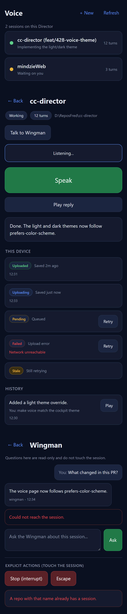
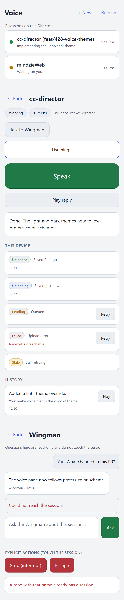

Developer Agent proof. PR base: feat/427-voice-mobiledetect (stacking).
Branch: feat/428-voice-theme. Option A: NOT merged.
The /voice Cockpit page now follows the OS/Cockpit theme preference instead of being
dark-only. On a system set to light, the page renders in a light VS Code-style palette; on a system
set to dark it keeps the existing dark appearance unchanged. The switch is automatic via
prefers-color-scheme - there is no manual in-page toggle (out of scope per the issue).
Text contrast and the large touch targets are preserved in both schemes.
src/CcDirector.Cockpit/wwwroot/pages/voice/voice.css - the only file changed.
:root. The handful of colors that were still hard-coded in rules
(the .primary/.primary.recording/.danger action
buttons, the .stage.error and .ns-error and .wm-msg.error
borders, and the five .ob-badge.* outbox status outlines) were moved into new
tokens (--primary-bg, --danger-bg, --error-line,
--badge-*-line, etc.). After this refactor the page contains no hard-coded
color outside :root and the light override block (per VisualStyle.md "don't
hard-code, use tokens").@media (prefers-color-scheme: light) block re-points those same
tokens to a light palette. Only colors change - no layout, padding, or font-size is touched,
so the large touch targets are identical in both schemes. Semantic colors
(green/blue/amber/red) are darkened in the light scheme so they stay legible on white;
badge/error outlines become light tints of each semantic color so the 1px borders read on
white rather than vanishing; filled action buttons keep white ink on their darker fills.No C#, no other CSS, no markup changed. The dark default is byte-for-byte the same appearance as before (same token values), so existing dark users see no change.
/voice in the Cockpit (or any browser) with the OS set to dark./voice.Proof below was produced by rendering the real voice.css against the
real /voice markup (session list, single-session view, outbox with all five status
badges, Wingman view, error surfaces) in a 430px mobile viewport with Chromium's
color_scheme emulation set to dark and then light.
| Criterion | Expected | Actual | Result |
|---|---|---|---|
/voice renders correctly in both light and dark, following prefers-color-scheme. |
Dark scheme = current dark look; light scheme = light look, switched purely by the OS preference. | Dark render unchanged; light render shows light surfaces/dark ink. The only difference between the two screenshots is the emulated prefers-color-scheme value. |
PASS |
| Text contrast and button sizes remain accessible in both themes. | Ink/muted text legible on both backgrounds; buttons same size in both. | Light: ink #1B2233 on bg #F3F4F6 (~13:1), muted #5A6478 (~4.7:1). Dark unchanged. No size rules changed, so the Speak/Play/Retry/danger targets are identical in both screenshots. |
PASS |
Proof: side-by-side screenshots of /voice in light and dark. |
Both screenshots committed. | voice-dark.png + voice-light.png below. |
PASS |
prefers-color-scheme: dark) - unchanged
prefers-color-scheme: light) - new
dotnet build cc-director.sln
Build succeeded.
0 Warning(s)
0 Error(s)
No drift. This is a presentation-only CSS change to one Cockpit static asset - no architecture,
no container, no security posture changes. No docs/cencon/ update required.
I believe this is finished.
All three acceptance criteria are met, the full solution builds clean (0/0), and the
light/dark side-by-side proof is committed. PR base is feat/427-voice-mobiledetect and
is NOT merged (Option A).